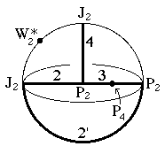
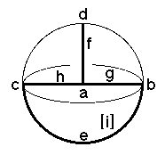

225
225
 227
227 Orbifold Atlas Home Page
Orbifold Atlas Home Page
 Crystallographic Topology Home Page
Crystallographic Topology Home Page
Underlying Topological Space: D3; Figure Pseudo-Symmetry (FPS): m
Euclidean 3-Orbifold with Invariant-Lattice-Complex Letters
(left), Wyckoff Site Letters (right)
 
| FPS | Mult | Lattice Comp | Group Graph | Wyckoff Set | 2[4]Cover |
| 8-1 | P2 | 432 | a | ||
| 8-1 | P2 | 32' | b | ||
| 24-1 | J2 | 22' | c | ||
| 24-1 | J2 | 41' | d | ||
| 48-1 | P26[-]J22 | 3<2'>2 | e:b-c | ||
| 48-1 | P26[-]J22 | 32'<4>1' | f:a-d | ||
| 64-1 | P28[P4]P28] | 2'<3>42 | g:a-b | ||
| 96-1 | P212[-]J24 | 43<2>2' | h:a-c | ||
| 96-1 | m | i:e,d | |||
| 192 | 1 | j:fgh,i | |||
| 96-1 | P212[-]J24 | 2*=32'<1'>4 | i1:b-d | #221(i) | |
| 96-1 | J24[W*2]J24 | 2*=4<1'>22' | i2:d-c | #221(h) | |
| m | 96-1 | m* | j1:fhi2 | #221(k) | |
| m | 96-1 | m* | j2:fhei1 | #221(m) | |
| Struct-Mult | Critical Points | Heegaard Surf | Wyckoff Cut | |
| Scub-1 | P2/J2/J2/P2 | H 32m{1'} | g h |
225
227
Orbifold Atlas Home Page
Crystallographic Topology Home Page
Page last revised: